第10章 方差分析
10.1 方差分析引论
男生和女生薪酬比较
两个总体均值的t检验
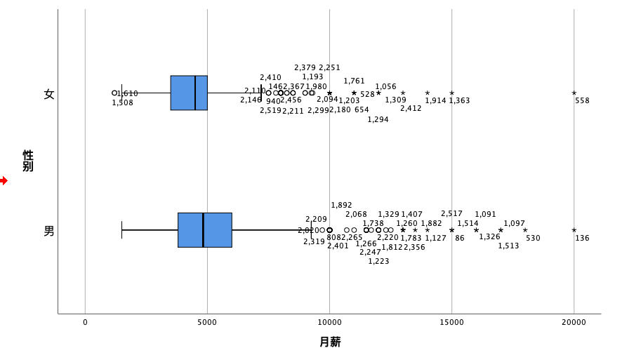
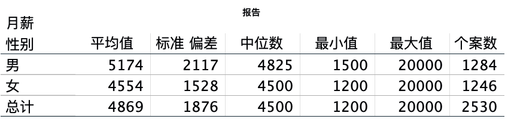
两个总体均值的比较：独立样本 \(t\) 检验
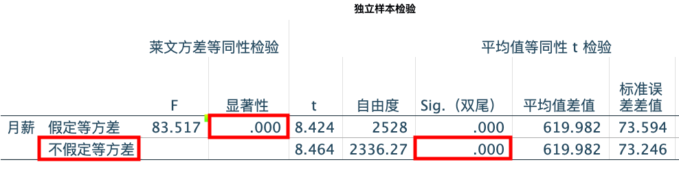
比较两个总体均值是否相等时，可以使用第 8 章（8.3.2 节）的两独立样本 \(t\) 检验。
拓展问题：五个学院薪酬分布的箱线图
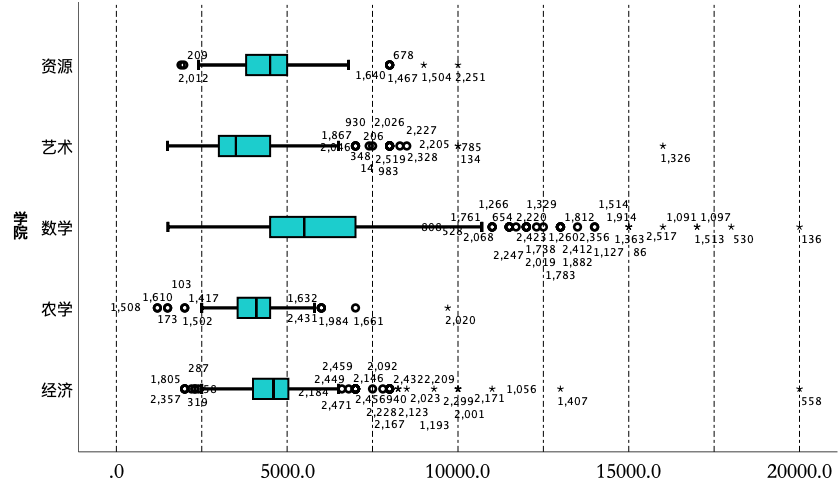
五个学院毕业生薪酬差异比较
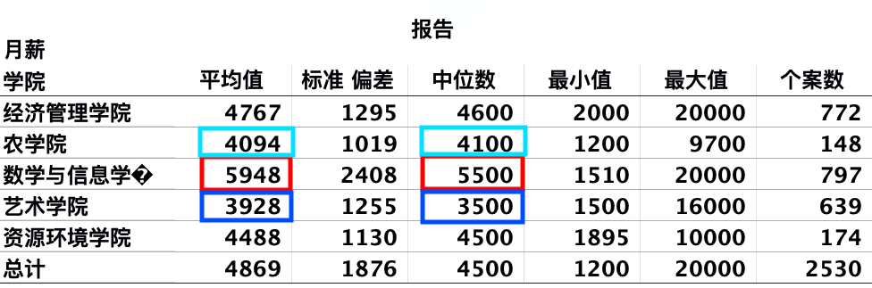
五个学院的毕业生薪酬是否存在显著差异？
如果对五个学院进行两两比较，需要进行 \(C_5^2 = 10\) 次检验：
- 经管 VS. 资环
- 经管 VS. 数信
- 经管 VS. 农学
- 经管 VS. 艺术
- 资环 VS. 数信
- 资环 VS. 农学
- 资环 VS. 艺术
- 数信 VS. 农学
- 数信 VS. 艺术
- 农学 VS. 艺术
两个总体均值是否相等的 \(t\) 检验：10 次
\[ \begin{aligned} H_0: \mu_1 = \mu_2 \quad &\text{vs.} \quad H_1: \mu_1 \neq \mu_2 \\ H_0: \mu_1 = \mu_3 \quad &\text{vs.} \quad H_1: \mu_1 \neq \mu_3 \\ \vdots \quad &\qquad \qquad \vdots \\ H_0: \mu_4 = \mu_5 \quad &\text{vs.} \quad H_1: \mu_4 \neq \mu_5 \end{aligned} \]
示例：不同学院的毕业生薪酬是否存在显著差异？
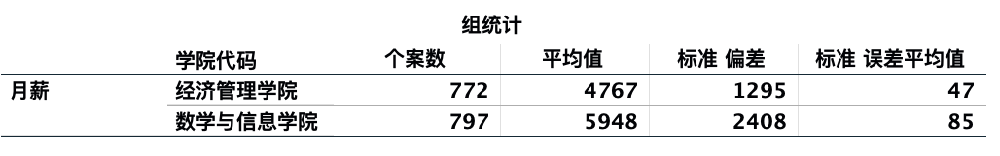
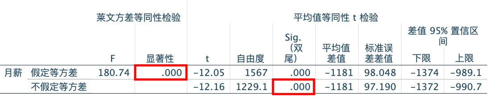
示例：农学院与艺术学院毕业生平均薪酬是否存在显著差异？
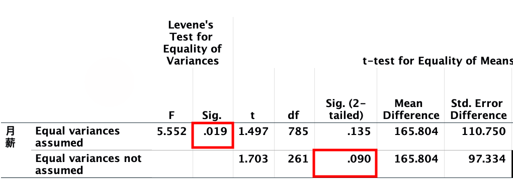
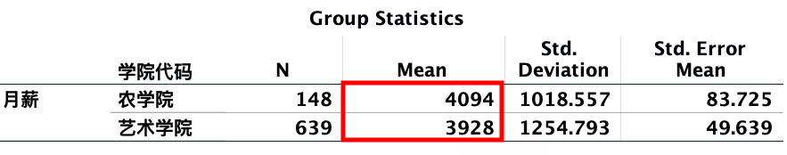
为什么不能直接做 10 次 \(t\) 检验？
使用两个总体均值的假设检验（8.3.2 节的方法）做 10 次检验存在明显缺陷：
- 每一次假设检验只利用两组样本的信息。
- 若将每次假设检验的显著性水平定为 \(\alpha = 0.05\)：
- 每次检验中犯第一类错误的概率上限为 \(0.05\)，不犯第一类错误的概率下限为 \(0.95\)。
- 在 10 次独立检验中，每次都不犯第一类错误的联合概率为： \[0.95^{10} = 0.599\]
- 至少有 1 次犯第一类错误的概率上升为： \[1 - 0.599 = 0.401\]
做 10 次假设检验不仅繁琐、耗时，而且犯第一类错误的风险大大增加！
多个总体均值的比较：方差分析
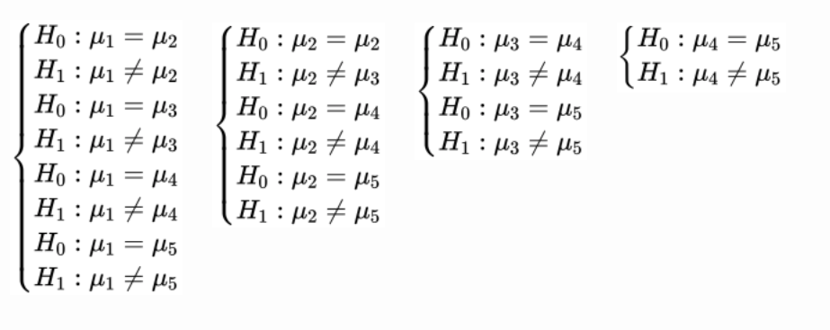
- 方差分析与做 10 次两两假设检验不等价。
- 做 10 次假设检验会使犯第一类错误的风险大幅膨胀。
方差分析：Analysis of Variance (ANOVA)
- 核心目的：讨论多个总体均值的相等性。
- 核心优势：
- 同时比较多个总体均值是否相等。
- 避免了做多次两两假设检验导致犯第一类错误概率增加的风险。
统计学家：Ronald Fisher
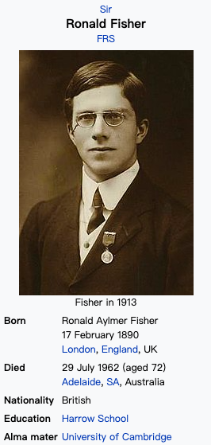
Ronald Fisher (1890–1962)
- British statistician and geneticist.
- From 1919 onward, he worked at the Rothamsted Experimental Station for 14 years; there, he analysed its immense data from crop experiments since the 1840s, and developed the analysis of variance (ANOVA).
- In 1921, published Studies in Crop Variation, marking his first application of the analysis of variance (ANOVA).
- 参考：Wikipedia — Ronald Fisher
Fisher 的贡献：开创了现代统计学
主要学术贡献：
- \(F\) 分布
- 实验设计（Experimental Design）
- Fisher 判别分析
- 极大似然估计
- “A genius who almost single-handedly created the foundations for modern statistical science.” — Hald, Anders (1998), A History of Mathematical Statistics, New York: Wiley.
- “The single most important figure in 20th century statistics.” — Efron, Bradley (1998), R. A. Fisher in the 21st century, Statistical Science, 13(2): 95–122.
方差分析的原假设和备择假设
\[ \begin{aligned} H_0 &: \mu_1 = \mu_2 = \cdots = \mu_k \\ H_1 &: \mu_1, \mu_2, \cdots, \mu_k \text{ 不全相等} \end{aligned} \]
- 原假设 \(H_0\)：不同组别（因子水平）下，定量变量的总体均值相等。
- 备择假设 \(H_1\)：不同组别（因子水平）下，定量变量的总体均值不全相等（即至少有两个总体的均值不相等。
\(H_1\) 不能表达成：\(\mu_1 \neq \mu_2 \neq \cdots \neq \mu_k\)！ “不全相等”是指即至少有两个总体的均值不相等，而非所有总体均值两两都不相等。
方差分析中的术语
- 因素 / 因子（Factor）：定性变量
- 水平（Level）/ 处理（Treatment）：定性变量的具体取值
- 定量变量
方差分析的假定
- 正态性：各个总体服从正态分布
- 方差齐性：各个总体的方差相同
- 独立性：观测值是相互独立的
- 对于大样本，即使总体不严格满足“正态分布”和“方差齐性”，ANOVA 的检验结论仍然稳健。
- 对于小样本，如果总体非正态且方差不齐，应改用非参数检验方法，如 Kruskal–Wallis 检验等。
10.2 单因素方差分析
方差分析思想：总平方和的分解
\[SST = SSA + SSE\]
- \(SST\)（Sum of Squares Total，总平方和）：全部观测值的总变异。
- \(SSA\)（Sum of Squares due to Treatment，组间平方和）：因子效应，反映系统误差（因子水平差异造成）和随机误差。
- \(SSE\)（Sum of Squares due to Error，组内平方和）：残差效应，仅反映随机误差。
总平方和 \(SST\)（Total Sum of Squares）
\[SST = \sum_{i=1}^{k} \sum_{j=1}^{n_i} (x_{ij} -\bar{\bar{x}})^2\]
- \(SST\)：反映了所有观测值围绕总均值的变异。
- \(x_{ij}\)：第 \(i\) 个因子水平下的第 \(j\) 个观测值。
- \(\bar{\bar{x}}\)：总均值（the overall mean）。
组间平方和 \(SSA\)
\[SSA = \sum_{i=1}^{k} n_i (\bar{x}_i - \bar{\bar{x}})^2\]
- \(\bar{x}_i\)：第 \(i\) 组的组内均值（treatment mean）。
- \(SSA\)：反映了各组内均值围绕总均值的变异。
- \(SSA\) 的统计含义：因子效应，反映了系统误差（由因子水平差异造成）\(+\) 随机误差的总和。
组内平方和 \(SSE\)
\[SSE = \sum_{i=1}^{k} \sum_{j=1}^{n_i} (x_{ij} - \bar{x}_i)^2\]
- \(\bar{x}_i\)：第 \(i\) 组的组内均值（treatment mean）。
- \(SSE\)：反映了各观测值围绕其所在组内均值的变异。
- \(SSE\) 的统计含义：残差效应，仅反映了随机误差。
总平方和的分解示意图
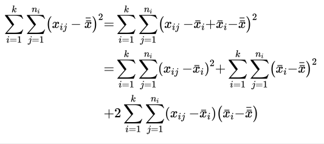
数学推导：总平方和 \(=\) 组内平方和 \(+\) 组间平方和
\[ \begin{aligned} SST &= \sum_{i=1}^{k}\sum_{j=1}^{n_i}(x_{ij} - \bar{\bar{x}})^2 \\ &= \sum_{i=1}^{k}\sum_{j=1}^{n_i}\big[(x_{ij} - \bar{x}_i) + (\bar{x}_i - \bar{\bar{x}})\big]^2 \\ &= \underbrace{\sum_{i=1}^{k}\sum_{j=1}^{n_i}(x_{ij} - \bar{x}_i)^2}_{\text{组内平方和 } SSE} + \underbrace{\sum_{i=1}^{k} n_i (\bar{x}_i - \bar{\bar{x}})^2}_{\text{组间平方和 } SSA} + 2\sum_{i=1}^{k}\sum_{j=1}^{n_i}(x_{ij} - \bar{x}_i)(\bar{x}_i - \bar{\bar{x}}) \end{aligned} \]
证明：交叉项等于 0
\[ \begin{aligned} \sum_{i=1}^{k} \sum_{j=1}^{n_i} (x_{ij} - \bar{x}_i)(\bar{x}_i - \overline{\overline{x}}) &= \sum_{i=1}^{k} \sum_{j=1}^{n_i} (x_{ij} - \bar{x}_i)\bar{x}_i - \sum_{i=1}^{k} \sum_{j=1}^{n_i} (x_{ij} - \bar{x}_i)\overline{\overline{x}} \\ &= \sum_{i=1}^{k} \bar{x}_i \sum_{j=1}^{n_i} (x_{ij} - \bar{x}_i) - \overline{\overline{x}} \sum_{i=1}^{k} \sum_{j=1}^{n_i} (x_{ij} - \bar{x}_i) \\ &= \sum_{i=1}^{k} \bar{x}_i \underbrace{\left( \sum_{j=1}^{n_i} x_{ij} - \sum_{j=1}^{n_i} \bar{x}_i \right)}_{= \, 0} - \overline{\overline{x}} \sum_{i=1}^{k} \underbrace{\left( \sum_{j=1}^{n_i} (x_{ij} - \bar{x}_i) \right)}_{= \, 0} = 0 \end{aligned} \]
\[ \text{因为：} \sum_{j=1}^{n_i} x_{ij} - \sum_{j=1}^{n_i} \bar{x}_i = \sum_{j=1}^{n_i} x_{ij} - n_i \bar{x}_i = 0 \]
因此恒有：
\[SST = SSA + SSE\]
单因素方差分析表
| 误差来源 | 平方和 (\(SS\)) | 自由度 (\(df\)) | 均方 (\(MS\)) | \(F\) 值 | \(P\) 值 | \(F\) 临界值 |
|---|---|---|---|---|---|---|
| 组间 | \(SSA\) | \(k - 1\) | \(MSA = \dfrac{SSA}{k - 1}\) | \(F = \dfrac{MSA}{MSE}\) | \(P\) | \(F_\alpha(k-1, n-k)\) |
| 组内 | \(SSE\) | \(n - k\) | \(MSE = \dfrac{SSE}{n - k}\) | |||
| 总和 | \(SST\) | \(n - 1\) |
方差分析决策规则
检验统计量：
\[F = \frac{MSA}{MSE} = \frac{SSA / (k - 1)}{SSE / (n - k)} \sim F(k - 1, \, n - k)\]
- \(SSA\) 越大，说明组间差异越大，不同因子水平下的均值差异越大。
- \(SSA\) 越大、\(SSE\) 越小，则 \(F\) 值越大；\(F\) 值越大，越倾向于拒绝原假设。
- 临界值法：若 \(F > F_\alpha(k - 1, \, n - k)\)（上 \(\alpha\) 分位点），拒绝 \(H_0\)。
- \(P\) 值法：若 \(P < \alpha\)，拒绝 \(H_0\)。
单因素方差分析实例
实例 1：三种职业间的工作压力是否有明显区别？
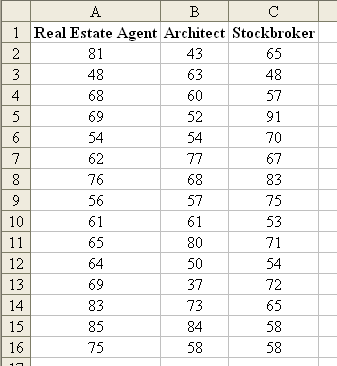
实例 2：学生对教师的评价与学习成绩是否相关？
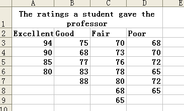
Excel 单因素方差分析输出结果
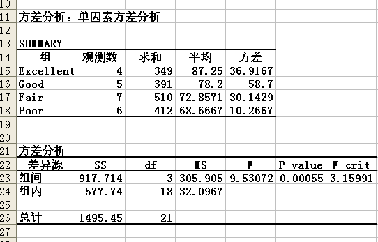
实例 3：五个学院薪酬的单因素方差分析（SPSS 输出）
\[ \begin{aligned} H_0 &: \mu_1 = \mu_2 = \mu_3 = \mu_4 = \mu_5 \\ H_1 &: \mu_1, \mu_2, \mu_3, \mu_4, \mu_5 \text{ 不全相等} \end{aligned} \]
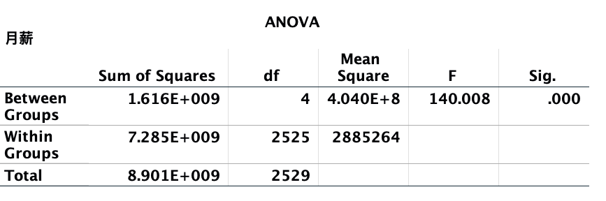
10.3 双因素方差分析
什么是双因素方差分析？
- 涉及两个定性变量（行因素 \(A\)、列因素 \(B\)）。
- 研究在满足两个定性变量条件的组合下，定量变量（响应变量）的观测值差异。
- 包含两组（或三组）假设检验：
- 检验行因素对因变量有无显著影响；
- 检验列因素对因变量有无显著影响；
- （可重复试验时）检验行因素与列因素的交互作用有无显著影响。
无重复双因素方差分析
总平方和分解为三部分：
\[SST = SSR + SSC + SSE\]
| 误差来源 | 平方和 (\(SS\)) | 自由度 (\(df\)) | 均方 (\(MS\)) | \(F\) 值 | \(P\) 值 | \(F\) 临界值 |
|---|---|---|---|---|---|---|
| 行因素 | \(SSR\) | \(k - 1\) | \(MSR\) | \(F_R = \dfrac{MSR}{MSE}\) | \(P_R\) | \(F_\alpha\) |
| 列因素 | \(SSC\) | \(r - 1\) | \(MSC\) | \(F_C = \dfrac{MSC}{MSE}\) | \(P_C\) | \(F_\alpha\) |
| 误差 | \(SSE\) | \((k - 1)(r - 1)\) | \(MSE\) | |||
| 总和 | \(SST\) | \(kr - 1\) |
实例：Two-Way Analysis of Variance
- 因子 A：对教师的评价
- 因子 B：每周的自学时数
- 响应变量：学生的成绩
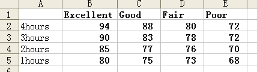
Excel 双因素方差分析输出结果
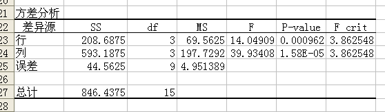
实例：分学院分性别月薪的箱线图
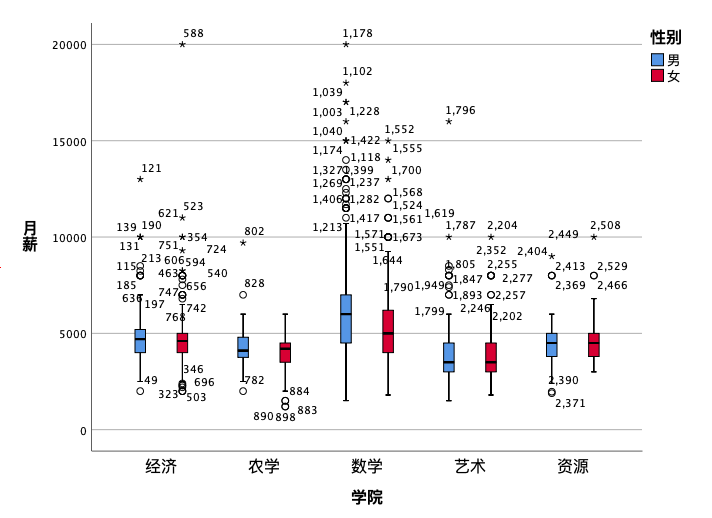
可重复双因素方差分析
总平方和分解为四部分：
\[SST = SSR + SSC + SSRC + SSE\]
| 误差来源 | 平方和 (\(SS\)) | 自由度 (\(df\)) | 均方 (\(MS\)) | \(F\) 值 | \(P\) 值 | \(F\) 临界值 |
|---|---|---|---|---|---|---|
| 行因素 | \(SSR\) | \(k - 1\) | \(MSR\) | \(F_R = \dfrac{MSR}{MSE}\) | \(P_R\) | \(F_\alpha\) |
| 列因素 | \(SSC\) | \(r - 1\) | \(MSC\) | \(F_C = \dfrac{MSC}{MSE}\) | \(P_C\) | \(F_\alpha\) |
| 交互作用 | \(SSRC\) | \((k - 1)(r - 1)\) | \(MSRC\) | \(F_{RC} = \dfrac{MSRC}{MSE}\) | \(P_{RC}\) | \(F_\alpha\) |
| 误差 | \(SSE\) | \(kr(m - 1)\) | \(MSE\) | |||
| 总和 | \(SST\) | \(n - 1\) |
其中 \(m\) 为每个水平组合下重复观测的样本行数，总样本量 \(n = krm\)。
第 10 章重点
- 单因素方差分析
- 原假设与备择假设
- 基本假定
- 方差分析表、\(F\)检验决策规则
- 双因素方差分析
- 无重复双因素方差分析
- 可重复双因素方差分析